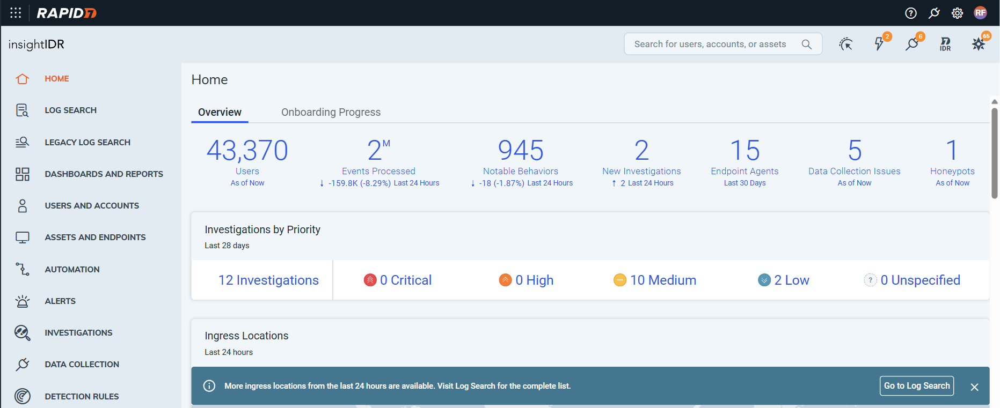

Cloud Identity Providers
Adding essential integrations to match our competitiors.
Overview
How organisations handle the identities of the users in their networks has changed: from a world where Microsoft Active Directory was the universal choice, organisations can now choose from a range of new providers offering cloud-based identity solutions. In cybersecurity, attributing actions within an environment to specific users is key to identifying malicious actions, rather than day-to-day business activity. Rapid7 needed to update its InsightIDR project to collect identity data from these new providers to accurately attribute actions to users.
| Role | UX Designer. |
| Timeline | 12 Weeks (Completed Aug 2025). |
| Tools & Methods | User Research (Research Repository), Desk Research (Competitive Analysis), Data Analysis, User Journey Maps, User Flow Diagrams, Storyboarding, Wireframing, Prototyping, Engineering Hand-off, Support Engineering to build. |
| Outcome | Early Access Program - Multiple Customers. Phase 2 Designs Complete. Future Identity Provider support planned and prioritised. |
My Role
My mentor Gus was assigned as Design Lead on this project, although, as a busy Staff Designer across many projects, I would often provide the design perspective in the team sync meetings, take the lead on ideating solutions and present these to the wider team. Gus and I would then discuss the project in our twice-weekly 1-1 meetings and plan the next steps. While engineers were writing the code, I would be the point of contact for any queries. It helped that I had worked with the same engineering team and Product Manager on a previous project and had developed a rapport and working relationship with them.
Research & Discovery
While I had some understanding of the importance of identity in cybersecurity from a previous project and how Microsoft Active Directory was used by organisations from my work on the Service Desk at Ulster University, my understanding was only at a surface level. To dig deeper, I started by understanding how identity was handled currently and how cybersecurity professionals use that data in their day-to-day work. I did this by speaking to our internal cybersecurity team (who use our products every day) and customer advisors who interact with customers every day, which gives them a wealth of knowledge on how customers use the product and what challenges they face.
I also looked at our competitors to understand how they brought identity information and attributed behaviour to users. This allowed me to see where they offered features beyond our own, that we would need to match, but also where we could add functionality to go beyond what they offered.
With all this information, I was now confident that I could start to design a proposed solution that would meet our users' needs.
Design Ideation & Iteration
As we already supported Microsoft Active Directory identity information and attribution, my first job was to identify what we would need to change to expand this to other identity providers. I discovered that, at the most basic level, there would be several in-product and documentation copy changes, especially in the onboarding phase of the customer journey. I also noted that how we displayed identity information was not as clear or as useful to users as it could be and that a redesign of this part of the identity page would make a huge difference. This would also allow us to display additional information that cloud identity providers hold that Microsoft Active Directory did not. When I presented these designs to the wider team, they could all see the improvement they would make to the overall experience; however, to display additional information would require changes to the backend database to store the information and this would add significant time to delivering the project, as our competitiors already offered cloud identity provider integrations, time was of the essence and it was decided to match the current framework for an initial release and revisit adding additional data later during phase 2 of the project.
One of the key design challenges of this project was how to handle customers who used more than one identity provider. We discovered during the discovery phase that this was a common scenario, even for our own in-house security team. The challenge was that, in most cases, if an identity was present in two providers, the data would and should be the same; therefore, we would be filling a user's screen with duplicate data. However, if the data was different at all this could be a security risk or a simple admin error, but something a security professional would want to investigate. Therefore, we needed to develop a solution that didn't overwhelm a user but could show the source of the data, and especially highlight discrepancies. My ideal solution to this was to include the icons of each identity provider that supplied the information next to the data provided, but this again would have to wait for phase 2, so for the initial release we decided on a tabbed layout with a tab for key data from all providers, and additional tabs for each provider showing exactly what data they had provided. Whilst not the ideal solution, it provided what security analysts told us was key to them: that they had the data.
Later in the design process, the engineering team ran into some issues surrounding the permissions a user would need to allow their identity information to be ingested by Rapid7 products. This was not an ideal situation, as it meant that users would have to do more. To reduce this additional work, I ideated on ways in which we could streamline the experience for users, using auto-fill where possible as well as prompting them for the additional permissions where appropriate. Working alongside the engineering team, we were able to find a solution that didn't delay delivery of the feature to customers and offered the best user experience given the constraints we were under.
Future Improvements
It was essential to deliver cloud identity provider integration to Rapid7 customers as soon as possible; as such, I discovered improvements that we could add to the overall identity experience. It was not possible to include these in the first release, so as a team we decided to spin up a phase 2 of the project to maximise the experience.
The first of these was to look at the identities area of the product and realign the data shown with current security analyst needs. This would allow us to include additional data integrated from the new identity providers we were now able to support. With this additional data and making the most of other improvements across the platform, we would also be able to update the data visualisations displayed on each individual identity page, providing additional and valuable context to analysts investigating potential malicious activity.
Through my research and discovery phase, I discovered that a recently acquired product, which had been added to the Rapid7 portfolio, collected identity data, albeit for a different purpose (auditing rather than investigation). As a business, we were moving towards a more connected platform and away from individual products, and this duplication of features was something leadership were keen to eliminate. I was therefore able to create some design proposals for how a combined identities page could look and work from a customer perspective. I shared this with the wider team, and it was agreed that this would be something that the engineering team would look at further to consider feasibility and timelines.
Outcome
We were able to begin an early access program for select customers on schedule before the end of Q2 2025. Feedback from these customers was positive, and even at the earliest stage, they could see the benefit of having the additional data. Given the success of the early access program, it was decided to offer the new capabilities for general release in early September 2025, just after the end of my internship.
During the research and discovery phase of the project, we identified several cloud identity providers that our customers used and needed us to support. Engineering needed to add each provider individually, so once the early access program validated the reliability of the changes made, we were able to, as a team, prioritise the next providers to offer based on which would offer the most value to customers.
Throughout the project, it was clear that identities were an area where we could make improvements within the product that would make a real difference to customers and give us a competitive advantage against other security software companies. With this in mind, part of my job was to create additional design proposals for what this could look like, so that engineers could scope the work and resources could be sought. When I ended my internship, these proposals were complete, and engineering was planning phase 2 of the project based on which of these improvements were feasible with available resources.
Lessons
I was able to take a lot of lessons from this project, the main one being the need to be flexible and work alongside the engineers and product management to deliver to customers, even if this meant reducing the design scope to meet the required timeframe. Sometimes this meant compromising with engineers and pushing some work to a later date, and while I found this challenging at first, I grew to understand the constraints and pressure we were all under to deliver this project. This allowed me to work with the engineering team to deliver the best possible outcome to customers. By working closely with the engineering team, we were able to spot issues early and work collaboratively to find the best solution. Even though the constraints were frustrating at times, I found this project incredibly rewarding, especially the teamwork and collaboration that allowed us to deliver on time.
Unfortunately due to NDA requirements, I am limited to publically available in-product images or Figma mock-ups.